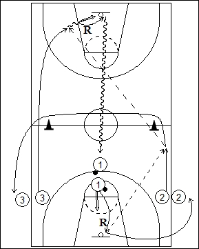

Catégorie : FASTBREAK (Fb-005)
Déroulement
- Trois files de joueurs. Une file avec ballons à une ligne de lancers-francs. Deux autres files à hauteur de cette même ligne de lancers-francs le long des lignes latérales.
- Le premier joueur de la file 1 shoote un lancer-franc et effectue le rebond immédiat. Il effectue la première passe de contre-attaque (après remise en jeu de la baseline si le lancer-franc a été réussi) vers le premier joueur de la file 2 qui a démarré au moment du rebond. Celui-ci réalise la deuxième longue passe vers la premier joueur de la file 3 (réception directe pour un lay-up) qui a démarré également au moment du rebond.
- 1 va dans la file 2. 2 contourne les deux cônes de la ligne médiane et va en 3. Le joueur 3 prend son rebond et revient en dribble rapide dans la file 1.
Coaching points
- Dès le rebond de 1, il ne doit plus y avoir de dribble; les deux passes doivent donc être précises.
- On peut débuter le drill par un shoot à 3 points au lieu d’un lancer-franc.
- La première passe peut être réalisée du côté opposé, donc vers le premier joueur de la file 3.